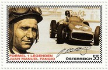
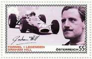
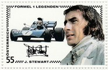
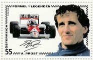
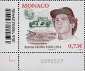
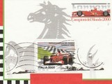
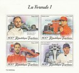

Cars Timeline
The timelines are organised by decade - click on a decade below to see the cars that competed in that decade.
1950

The first official FIA Formula 1 race took place at Silverstone on 13th May 1950, the race was won by Guiseppe Farina driving an Alfa Romeo. The first few years of the F1 World Championship for Drivers were dominated by Juan Manuel Fangio and Alberto Ascari, and Italian cars - Alfa Romeo, Ferrari and Maserati. Then in the mid-50s Mercedes Benz were a force to be reckoned with. Later in the decade, the World Championship for Constructors was introduced and British teams and drivers began to make their mark, most notably Mike Hawthorn, Stirling Moss and Vanwall. The end of decade saw the Cooper cars bring in a revolution with much success, that of putting the engine behind the driver, especially in the hands of Jack Brabham.
1960

The early 1960s saw another revolution in the technology of the racing car - the Lotus 25 had an aluminium sheet monocoque chassis instead of the traditional spaceframe design. This period of Formula 1 history saw the British being dominant, with drivers like Graham Hill and Jim Clark and the Lotus and BRM teams. However, Jack Brabham was still a force to be reckoned with, now winning titles with his own cars. The late 1960s saw the introduction of the most dominant engine in Formula 1 history, the Ford-Cosworth DFV. Also by the late 1960s about a third of the races were being held outside of Europe, and safety was becoming a major issue.
1970

Sponsorship had arrived in Formula 1 at the end of the previous decade and was now becoming established in the sport. In the 1970s, Lotus were still winning titles, but so were Ferrari; this decade saw the emergence of two great names McLaren and Williams. The decade was dominated by drivers like Emerson Fittipaldi, Jackie Stewart, Niki Lauda, James Hunt and Jochen Rindt. The end of the 1970s saw the start of the ground effect era. There were still many deaths in the sport; but also the remarkable recovery of Niki Lauda, driving his Ferrari just six weeks after having been given the last rites - he missed out on the 1976 title by just one point to James Hunt in the McLaren.
1980

McLaren merged with Ron Dennis's Formula Two Project-4 team and started to become a hugely successful team, Williams and Ferrari also proved very successful. The decade saw some titanic battles between drivers Ayrton Senna, Alain Prost, Nelson Piquet and Nigel Mansell. Turbo-charged engines became the norm and by the mid to late 1980s some engines were putting out more than 1,000bhp in qualifying trim, but by the end of the decade the turbos were banned. With the removal of the turbos, more teams could afford to enter the sport so at the end of the decade 39 drivers in 21 teams were competing for 26 places on the grid.
1990

McLaren and Williams continued to dominate throughout the 1990s, but towards the end of the decade a new force was emerging - Michael Schumacher and Ferrari. In the early part of the decade the cars were becoming more and more technically advanced with many driver aids being developed - by the mid-1990s these were banned. In the early 1990s there was an air of invincibility in Formula 1 as there had been no deaths for a few years, however, this was crushed by the tragic events of the 1994 San Marino Grand Prix. The FIA reacted with many changes aimed at reducing speed and increasing safety. At the end of the decade the small privateer teams began to disappear from the sport and the large motor manufacturers began to move back in.
2000

The first half of the decade belonged to Michael Schumacher and Ferrari; only in the mid-2000s was their dominance halted by a young Spanish driver (Fernando Alonso) and his Renault. An increasing number of small teams disappeared from the grid and further manufacturers reentered the sport. Both McLaren and Ferrari returned to form later in the decade, in 2007 Kimi Raikkonen in the Ferrari won the title by one point from rookie Lewis Hamilton in the McLaren. The end of the decade saw many rule changes including the introduction of KERS and adjustable front wings. Honda pulled out of Formula 1 having struggled for many years, but the team was kept going following a management buy out by Ross Brawn and both titles was the reward for himself and Jenson Button.
2010
The early part of the decade saw many rule changes aimed at cost reduction and improving the 'show' for the fans - KERS was re-introduced after it had been banned and DRS was introduced to increase overtaking. Red Bull Racing entered Formula 1 in 2010, buying the old Jaguar team, they recruited top designer Adrian Newey who had had much success with Williams and McLaren and with Sebastian Vettel dominated the early part of the decade. Formula 1 continued to expand into new countries.
2020

The 2019-2020 coronavirus pandemic caused significant global disruption at the start of 2020.